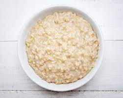

Basic porridge

Description
Plain porridge.
Ingredients
For the porridge
120 grams oats
water as fits
To serve
1 spoon
1 bowl
Steps
Boil water
Put oats in bowl
Pour boiling water into bowl and stir oats with spoon. Wait 5 minutes. Finished.